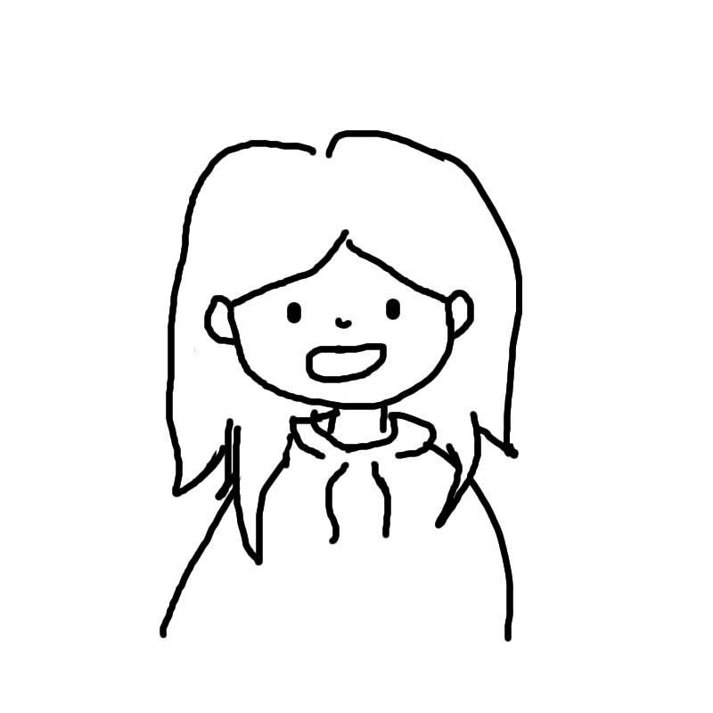

Joy
Computer Science Technology student
- School
- Vanier College
- Based in
- Montréal, QC
I build web, desktop and mobile applications, from booking systems designed for real clients to a subscription-tracking app. I'm also learning the networks and Linux systems they run on.
Looking for an IT internship for Winter 2027.

-
Le Châteaubriand
Booking and client management system for a reception hall. Clients submit event requests online, and the owners manage clients, events, menus, payments and seating from an admin dashboard. Includes an interactive canvas floor planner, two-factor login, a French version and automatic deployment with GitHub Actions.
Team project, 4th semester. PHP, Slim, Twig, RedBeanPHP, JavaScript, GitHub Actions
-
Nail salon booking site
Online booking site built for a nail salon owner. Customers pick a service, date and time, then book with an account or as a guest, with an availability check to prevent double bookings. The owner manages services, appointments, FAQs and reviews in a role-protected admin area.
Team project, 4th semester. PHP, Slim, Twig, MySQL, RedBeanPHP
-
Sub Wallet
Mobile app for keeping track of subscriptions. Users sign in, sort their subscriptions into categories, see prices in the currency of their choice and get a reminder two days before each renewal.
Team project, 4th semester. Flutter, Dart, Firebase Auth, Cloud Firestore
-
Linux admin menu
Command-line tool that brings common Linux admin tasks into one menu: system status and processes, scheduled backups with cron, network and Wi-Fi setup, systemd services, and user and group management.
Team project, 3rd semester. Bash, cron, systemd
-
Flappy Fish
An arcade game inspired by Flappy Bird, but underwater: guide a fish through the obstacles for as long as you can.
Team project, 1st semester, Game Programming
Administrative assistant
Cote R Expert - Remote, part-time, current
Administrative support for a company that helps CEGEP students in Sciences de la nature. I answer emails and phone calls and take care of day-to-day administrative tasks.
Food service
Banh Mi & Thé Perlé - Part-time, Summer 2026
Customer service in a fast-paced bubble tea and banh mi shop.
Peer tutoring
Vanier College - Autumn 2025 & Winter 2026
Helping fellow students with their math and science courses.
Let's talk!
jiayu.joyho@gmail.com
github.com/J0YSICK
This bin is empty (for now).